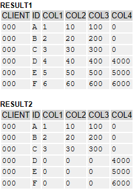

AS ABAP Release 755, ©Copyright 2026 SAP SE. All rights reserved.
ABAP - Keyword Documentation → ABAP - Programming Language → Processing External Data → ABAP Database Access → ABAP SQL → ABAP SQL - Write Access → UPDATE dbtab → UPDATE dbtab, source →
UPDATE dbtab, set indicators
Syntax
... INDICATORS {[NOT] SET STRUCTURE set_ind}
| (indicator_syntax) ...
Alternatives:
1. ... INDICATORS [NOT] SET STRUCTURE set_ind
2. ... INDICATORS (indicator_syntax)
Effect
The addition INDICATORS of the UPDATE FROM clause can be used to specify set indicators for a work area or for an internal table. The purpose of set indicators is to indicate columns for change. UPDATE FROM without indicators overwrites all fields of a row but when set indicators are used, only the indicated fields are updated. The addition can be specified only after UPDATE FROM for structured work areas wa or internal tables itab with a structured line type. The source work area or internal table must have as last field a structure set_ind with the same number of components as the DDIC database table to be updated, and each component serves as set indicator for one row. There is a static variant and a dynamic variant.
Hint
Set indicators enforce strict mode from Release 7.55.
... INDICATORS [NOT] SET STRUCTURE set_ind
Effect
The set indicator set_ind indicates which fields of a database are to be updated by the UPDATE FROM clause. set_ind must be included in the source work area or source internal table as last field and it must contain one component for each column of the DDIC database table to be changed. All individual components of set_ind must have either the data type c and length 1, or the data type x and length 1. The UPDATE FROM clause checks the content of set_ind and updates only fields that are marked with 'X' (data type c) or '1' (data type x). Fields which contain any other character or digit are not updated.
When using the addition INDICATORS NOT SET, the reverse logic is applied: all fields are updated, except the ones marked with 'X' (data type c) or '1' (data type x).
Key fields must always be included in the indicator structure. However, the set indicators don't have any effect on key fields.
Hints
- Set indicators work for normal structures as well as for LOB handle structures. If the source work area or internal table contains LOB handle components that are not marked for update, the LOBs they refer to are not updated either. As without set indicators, LOB handles should always be closed, regardless of whether they were marked for update or not.
- Work areas with set indicators can be defined with the addition INDICATORS to the TYPES statement.
Example
An internal table int_tab is defined as source structure. By using the addition INDICATORS to the TYPES statement, it consists of the structure of the DDIC database table DEMO_UPDATE as well as the indicator structures col_ind as last component, which mirrors the structure of the DDIC database table. Three rows are chosen to be updated. From these rows, however, only the field COL4 is marked for update. When the UPDATE FROM statement is carried out, only the three indicated fields are updated. Without the set indicators, the three rows would have been overwritten entirely and all fields for which no value was specified would have been initialized (see image below).
Note: The following code is an extract from the executable example UPDATE, SET INDICATORS. The results shown in the image can be replicated with the executable example.
TYPES ind_wa TYPE demo_update WITH INDICATORS col_ind
TYPE abap_bool.
DATA ind_tab TYPE TABLE OF ind_wa.
ind_tab = VALUE #(
( id = 'D' col4 = 4000 col_ind-col4 = abap_true )
( id = 'E' col4 = 5000 col_ind-col4 = abap_true )
( id = 'F' col4 = 6000 col_ind-col4 = abap_true ) ).
UPDATE demo_update FROM TABLE @ind_tab
INDICATORS SET STRUCTURE col_ind.
result1 shows the result with set indicators, result2 without set indicators

Executable Example
UPDATE, SET INDICATORS
... INDICATORS (indicator_syntax)
Effect
Instead of the static specification, a parenthesized data object indicator_syntax can be specified after INDICATORS. This data object must contain the syntax shown for the static specification when the statement is executed. The syntax in indicator_syntax is not case-sensitive. If the data object indicator_syntax has no content, then the addition has no effect.
Security Hint
If used incorrectly, dynamic programming techniques can present a serious security risk. Any dynamic content that is passed to a program from the outside must be checked thoroughly or masked before it is used in dynamic statements. This can be done using the system class CL_ABAP_DYN_PRG or the built-in function escape. See SQL Injections Using Dynamic Tokens.
Example
This example is similar to the example for specifying information statically. The DDIC database table DEMO_UPDATE is updated from the work area col_ind and only the column COL4 is marked for update. In contrast to the first example, the set indicator is specified dynamically. The program DEMO_UPDATE_SET_IND_DYN fills the DDIC database table with values, carries out the UPDATE FROM statement, and displays the result.
TYPES ind_wa TYPE demo_update WITH INDICATORS col_ind.
DATA ind_wa TYPE ind_wa.
DATA(indicator_syntax) = `SET STRUCTURE col_ind`.
ind_wa = VALUE #( id = 'I' col4 = 4000 col_ind-col4 = '01' ).
UPDATE demo_update FROM @ind_wa INDICATORS (indicator_syntax).
Continue
 UPDATE, SET INDICATORS
UPDATE, SET INDICATORS